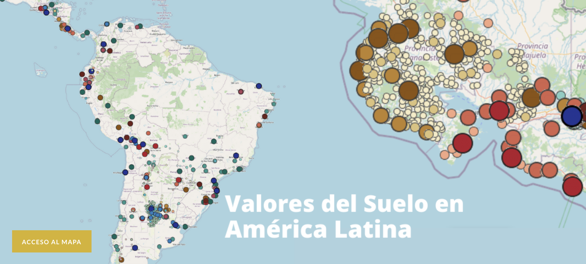
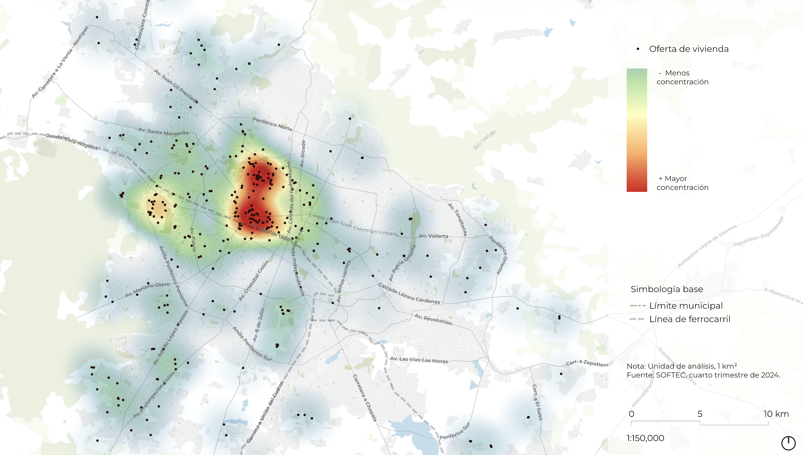

Proyectos
Conectando con el servidor...
Servicios

Inteligencia Territorial
Análisis geoespacial avanzado para la toma de decisiones territoriales estratégicas.
- Modelos de expansión urbana
- Generación de mapas y portales cartográficos
- Infraestructura de Datos Espaciales (IDE)

Ciencia de Datos Geoespaciales
Automatización y procesamiento de grandes volúmenes de datos urbanos y geográficos.
- Normalización y análisis masivo de datos
- Pipelines ETL de datos geográficos
- Dashboards e indicadores interactivos

Planeación Territorial
Consultoría técnica para planes de desarrollo urbano, zonificación y ordenamiento.
- Análisis de plusvalía y zonificación
- Indicadores de desarrollo urbano
- Diagnósticos de infraestructura y equipamiento

Valuación & Modelado Urbano
Modelación predictiva de valor del suelo, accesibilidad y dinámica de mercados inmobiliarios.
- Modelos hedónicos de precio de suelo
- Análisis espacial de accesibilidad
- Estudios de factibilidad y captura de valor
Perfil & Contacto
Alejandro Padilla Lepe
Teléfono: 3310-967-968
Email: urbanistalepe@gmail.com
Cédula Federal: 12470154
Cédula Estatal Jalisco: PEJ 333949
Disponibilidad: Para viajar (temporal)
Idiomas: Español (Nativo) · Inglés (B1)
Herramientas & Nivel
Habilidades Clave
- Sistemas de bases de datos espaciales y plataformas web.
- Gestión, dirección de equipos y coordinación de proyectos.
- Manejo de drones y levantamiento fotogramétrico.
- Construcción de indicadores y modelación urbana.
Participaciones Activas
QGIS México A.C.
Promoción y capacitación a instituciones y empresas en soluciones geoespaciales con software libre.
Mapa de Valores del Suelo de América Latina
Educación & Formación
Maestría en Ciencia de la Ciudad
Visiting Student – City Science Group
Lic. en Urbanística y Medio Ambiente
Cursos Destacados & Diplomados
- Taller CityScope: Proceso y Metodología — MIT Media Lab City Science Group (2021).
- Sistemas Complejos aplicados a la economía y fenómenos sociales — UNAM (2020).
- Certificación Profesional en Gestión de Proyectos (2020).
- Certificación QGIS Básico y Avanzado — OSGIS Academy (2019).
- Finalista: Concurso CORE Urbano CDMX — Diagnóstico territorial (2019).
- Curso SIG con Software Libre — Impartido para el Colegio de Urbanistas de Jalisco (2017).
- Diplomado en Planeación Regional — UNAM-SEDATU 288 hrs (2016).
- Seminario de Planeación Urbana Estratégica — CIDEU Gob. de Guadalajara (2013).
Experiencia Profesional
Coordinador General
- Desarrollo de convocatorias y sesiones de trabajo.
- Creación de plataforma digital, gestión y administración de bases de datos territoriales.
Especialista en Análisis Urbano y Datos Geoespaciales
- Gestión y administración de bases de datos vectoriales complejas.
- Desarrollo de indicadores, estadísticas y generación de modelos de análisis territorial y simulación CityScope.
PIU Tesistán
Analista y Diseñador de Proyectos Urbanos
- Realización de estudios de mercado de suelo y análisis territorial.
- Evaluación y planificación enfocado en equipamiento institucional y desarrollos privados.
Coordinador SIG
- Elaboración del diagnóstico del medio físico transformado e infraestructura territorial.
Coordinador SIG
Jefe de Normalización y Reportes de Avance Arqueológico
- Gestión de bases de datos vectoriales y desarrollo de indicadores de salvamento.
- Creación de registros de prospección arqueológica, excavación y geotecnia; soporte técnico y capacitación.
Líder SIG en Planeación Metropolitana
- Administración de bases de datos para transporte y planeación metropolitana.
- Gestión de SIGMETRO (actualmente ZoomMetropolitano), indicadores y análisis multivariable territorial.
Departamento Técnico
- Trabajo de campo para el proyecto IMUVIMAP y procesamiento de información vectorial.
- Participación en el proyecto PROCURHA: modelos de análisis y propuestas de política de vivienda social.
Publicaciones & Artículos
- CityScope Guadalajara: An integrative city-science-based tool for improving decision making in urban planning. Palomo-Briones, Padilla-Lepe, Gómez-Gutierrez, et al. (2025).
- Ciudad Cebolla: Roldan, Palomo-Briones, Padilla-Lepe, Gómez-Gutierrez, Jiménez-Cervantes, Gamboa-González (2025).
- Predicting Mobility Choice and Community Connectivity in Latin America: EB Pavon, LA Pastor, A Padilla, M Gamboa, K Larson. Case Studies on Transport Policy, 101387 (2025).
- Sustainable Development Goals: Experiences from the Local Level: Tlajomulco in the Context of the Guadalajara Metropolitan Area. GA Palomo-Briones, A Padilla, M Gamboa (2024).
- Usage of ABM in the Use Case of CSL@ Guadalajara: GA Palomo-Briones, A Grignard, AP Lepe. GAMA Days (2022).
- ¿Contribuye Airbnb a elevar el costo de la vivienda en alquiler en Guadalajara? EA Cordero, AT Munguía, AP Lepe. Revista Deliberativa (2021).
- Caracterización social y de entorno urbano de asentamientos irregulares en situación de pobreza en el AMG: IMEPLAN (2021).
Contacto
¿Tienes un proyecto en mente o alguna consulta sobre analítica urbana? Conversemos.
Email: urbanistalepe@gmail.com